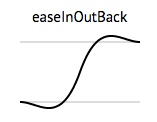
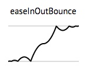

前端之路
----九口袋第一届技术交流活动
职业规划
菜鸟前端(夯实基础)
↓
产品经理/资深前端(积累实战经验、持之以恒、独当一面的责任感与能力)
↓
产品总监/Web架构师/项目经理(积累成功案例/拓展圈子/兴趣爱好)
↓
学无止境...
↓
产品经理/资深前端(积累实战经验、持之以恒、独当一面的责任感与能力)
↓
产品总监/Web架构师/项目经理(积累成功案例/拓展圈子/兴趣爱好)
↓
学无止境...
什么是前端？
前 后 端 分 离 的 思 考
1.一个人掌握所有技术 数据库 后端开发 前端相关的技术，
虽多但不精。
2.所以导致的做东西能做，但是并不能深入。因为人的学习 能力有限。能用，但是品质比较低
3.企业招人，很难招到各方面比较均衡，有符合预期的员工
2.所以导致的做东西能做，但是并不能深入。因为人的学习 能力有限。能用，但是品质比较低
3.企业招人，很难招到各方面比较均衡，有符合预期的员工
前端工具
前端自动化部署工具
GruntJs/Gulp/Fis
常用的编辑器
Sublime text、Webstorm/Phpstorm、HBuilder前端框架
前端性能优化
2.压缩并优化js/css/image
3.尽量静态页面，从简原则
4.延迟加载/提前加载
5.代码规范
团队协作
动画效果实践与优化
如何让页面看起来「你好活泼！」又不「你抽风啊？」
经理经常对我们说：
「所有元素要动起来，显得活泼、大气~」
（但是往往不会告诉你具体应该怎么动……）

射鸡湿经常对我们说：
「❤ 总之，我希望页面效果是 bling bling 的~ ❤」

HTML5 & CSS3
开发要点
- 动态；
- 好玩；
- 美观。
目前主流的动画实现方式
- jQuery Animate（setInterval）：易用，低效，兼容好；
- CSS Transition：硬件加速、移动端兼容，高效；
- requestAnimationFrame：易用，充分发挥浏览器性能。
影响动画效果的因素
浏览器的渲染方式：Layout -> Paint -> Composite
- 频繁重绘，改变颜色、背景图等；
- 频繁触发 Layout 导致回流，改变位置影响文档流。
Link: csstriggers.com
jQuery $.animate()
想起来很美，用起来很丑。
为什么不用 $.animate()
jQuery 无法解决频繁触发 Layout 导致的抽动。
var h1 = element1.clientHeight; // Read
element1.style.height = (h1 * 2) + 'px'; // Write (invalidates layout)
var h2 = element2.clientHeight; // Read (triggers layout)
element2.style.height = (h2 * 2) + 'px'; // Write (invalidates layout)
var h3 = element3.clientHeight; // Read (triggers layout)
element3.style.height = (h3 * 2) + 'px'; // Write (invalidates layout)在 JavaScript 中解决
// Read
var h1 = element1.clientHeight;
var h2 = element2.clientHeight;
var h3 = element3.clientHeight;
// Write (invalidates layout)
element1.style.height = (h1 * 2) + 'px';
element2.style.height = (h2 * 2) + 'px';
element3.style.height = (h3 * 2) + 'px';为什么不用 $.animate()
$.animate() 方法基于 setInterval，易导致堆积回调，最终导致跳帧。
// from jQuery 1.11-stable
jQuery.fx.interval = 13;
jQuery.fx.start = function() {
if ( !timerId ) {
timerId = setInterval( jQuery.fx.tick, jQuery.fx.interval );
}
};CSS Transition/Animation
画龙点睛的动画效果
易用
一行代码，两个属性。
/* CSS transition */
.xm-transition {
transition: opacity 2s, transform 1s;
}
/* CSS animation */
.xm-animation {
animation: mitu 2s;
}
动画曲线


贝塞尔曲线[Demo]
Link: http://easings.net/zh-cn
性能
硬件加速：一种特性，而非功能。
/* 创建 GPU 层，这是一种 hacker! */
.xm-3d-layer {
transform: translate3d(0, 10px, 0);
}既然硬件加速这么牛X，为什么不这样？
*, *:before, *:after {
transform: translate3d(0, 0, 0);
}- 不是所有的 CSS 属性都能获得 GPU 加速；
- GPU 传输的开销，WebKit 需要手动触发
- Firefox/IE 为所有动画都采取硬件加速
will-change属性
CSS Transition/Animation 演示
- Link: www.mi.com/dianyuan10400/
- Link: Animate.css
- Link: cssshake
JavaScript Animation
aka requestAnimationFrame, rAF
jQuery 动画 != JS 动画
按时间变化 -> 按每帧变化
同样的事情，不同的处理
// Read
var h1 = element1.clientHeight;
// Write
requestAnimationFrame(function() {
element1.style.height = (h1 * 2) + 'px';
});
// Read
var h2 = element2.clientHeight;
// Write
requestAnimationFrame(function() {
element2.style.height = (h2 * 2) + 'px';
});rAF 动画的优势
- 相比 CSS 动画有更好的掌控；
- 也有硬件加速喔~
- 合理降低 CPU 使用；
- 自动降帧；
- 老式浏览器降级至 setInterval 或 setTimeout。
setInterval vs. requestAnimationFrame
为什么 jQuery 用 setInterval 而不用 rAF？
特点比较
| jQuery | CSS Transitions | JavaScript Animation | |
|---|---|---|---|
| 性能 | Bad | Good | Good |
| 效果 | Not bad | Not bad | Good |
| 功能 | Good | Not bad | Good |
| 兼容 | Good | Bad IE10+ | Good IE10+ |
| 避免使用 | 简单交互 | 复杂交互 |
一切脱离产品需求的技术选择都是耍流氓
- 页面增强动画 -> CSS
- 复杂动画交互 -> rAF
<thank-you>
2015/6/19